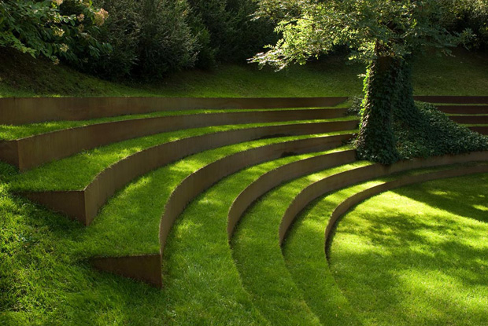

AMPHITHEATRE
The amphitheatre is one of the most exciting attractions at Pine City Zoo. Every day there are fun and educational shows where our trained staff will show you amazing animal behaviours and tricks. You will get to see eagles fly right over your head, parrots solving puzzles, and even sea lions clapping for you.
It is a large open-air venue surrounded by beautiful gardens and seats over 300 people, so bring your family and friends early to get a good seat. The shows run for about 30 minutes and are perfect for both kids and adults who want to learn more about animals in a fun way.
The amphitheatre is also used for special events and school programs, making it a place where learning comes to life.
WHERE WILL YOU FIND IT
The Amphitheatre is to the west of the main entrance, near the elephants.